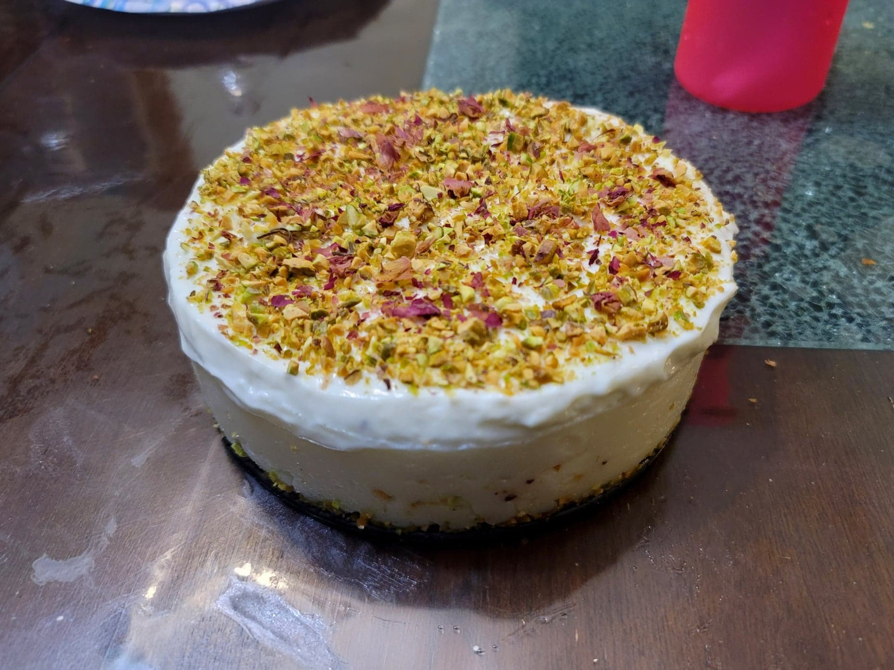

Layali Lubnan

Ingredients:
Semolina Base:
- 2 cups Milk
- 87.5 g Coarse semolina
- 100 g Sugar
- 1/2 tbsp Cornstarch OR 1 1/2 Mastic beads
- 1/2 tbsp Rose water
Simple Rose Syrup:
- 150 g Sugar
- 1 cup (125 ml) Water
- 1/2 tbsp Rose water
Topping:
- 1 cup (250 g) Ashta
- 15-30 g Pistachios, finely chopped
- 1/2 tsp Dried rose petals
Instructions:
- Prepare the syrup by adding the water and sugar to a small saucepan. Bring to a boil over medium heat while stirring often. Reduce the heat to low and simmer until thickened to preference, or about 5 minutes. Then stir in the rose water. Let cool completely.
- For the semolina base, pour the milk, semolina, and sugar into a saucepan and mix to combine. Place the cornstarch into a bowl and add a little bit of the milk and semolina mixture. Stir to create a slurry and then add to the saucepan.
- Heat the saucepan over medium-high heat while stirring constantly. Once you notice it starts to thicken, about after 2 minutes, reduce the heat to medium and continue to stir constantly for about another 4-5 minutes. It is done when you can see a trail when swiping the bottom of the pan. Remove from the heat and stir in the rose water.
- Brush the inside of a 6 inch springform cake pan with the rose syrup. Then sprinkle in a very thin layer of the pistachios. Pour the semolina base into the cake pan and flatten the top with a spatula. Transfer to a fridge to chill and set for about 4 hours.
- Then top the semolina base with a layer of ashta and flatten with a spatula. Return to the fridge and let chill for another hour.
- Remove from the fridge and release from the cake pan. Top with the remaining pistachios and the dried rose petals. Slice and serve with the simple rose syrup.